Guía paso a paso: despliega una instancia EC2 en el Sandbox de AWS Academy, instala Ollama y compara tres variantes cuantizadas del mismo modelo (Q8_0, Q4_K_M y Q2_K) en disco, memoria RAM, velocidad y calidad, además de dimensionar la VRAM para un modelo de 70B en AWS
Arquitectura en la Nube · Universidad de la Costa (CUC) · Ingeniería de Sistemas · 2026-2 Modalidad individual · Entrega: PDF con evidencias numeradas subido al aula virtual · Abierta desde su publicación hasta el domingo 29 de noviembre de 2026
Sigue los pasos en orden, de arriba abajo, sin saltarte ninguno. En este laboratorio vas a comprobar de forma experimental cómo la cuantización reduce los bits que ocupa cada parámetro de un LLM (Large Language Model, gran modelo de lenguaje) para que pueda ejecutarse con menos RAM (Random Access Memory, memoria de acceso aleatorio) o VRAM (Video Random Access Memory, memoria de video dedicada en tarjetas gráficas) y a mayor velocidad en tokens/s, analizando en qué punto exacto se degrada la calidad de las respuestas.
Antes de empezar: esta guía incluye desde cero el ingreso a AWS (Amazon Web Services) Academy y la creación de la máquina virtual para que puedas realizarla de forma independiente. Al finalizar (sección E) es obligatorio terminar tu instancia lab-cuantizacion para no agotar el presupuesto del curso.
0Qué vas a construir
Cuando entrenas un modelo de lenguaje, cada peso sináptico suele almacenarse en punto flotante de 16 bits (FP16, 16-bit Floating Point, es decir, 2 bytes por parámetro). La cuantización comprime esos pesos a enteros o bloques de menor precisión como INT8 (8-bit Integer, entero de 8 bits), INT4 (4-bit Integer, entero de 4 bits) o 2 bits usando el formato GGUF (GPT-Generated Unified Format, formato binario optimizado para cargar modelos rápidamente en CPU —Central Processing Unit, unidad central de procesamiento— y GPU —Graphics Processing Unit, unidad de procesamiento gráfico—). Aquí descargaremos tres cuantizaciones reales del mismo modelo qwen2.5:1.5b-instruct: Q8_0 (cuantización uniforme de 8 bits sin punto cero desplazado), Q4_K_M (cuantización de 4 bits con bloques K-quant de tamaño medio, que conserva mayor precisión en las capas más sensibles) y Q2_K (cuantización extrema de 2 bits con bloques K-quant).
AEntrar al Sandbox de AWS Academy
📍 Dónde estás: AWS Academy → Cursos → Módulos → Entorno de pruebas (Sandbox)
A1 · Panel de cursos activos
Ingresa a AWS Academy y abre tu curso activo: «AWS Academy Cloud Architecting (Spanish LATAM)», identificado con el apodo «Arquitectura en la Nube 2026-2».
C1 · Muestra: el panel de cursos activos de AWS Academy. Qué verificar: entra a «AWS Academy Cloud Architecting (Spanish LATAM)» / «Arquitectura en la Nube 2026-2».
A2 · Menú Módulos y Entorno de pruebas (Sandbox)
En el menú izquierdo del curso haz clic en Módulos, desplázate hasta el final y abre Entorno de pruebas (ese es el nombre del Sandbox en este curso).
C2 · Muestra: la sección final del menú Módulos. Qué verificar: haz clic en el ítem Entorno de pruebas para cargar el entorno de laboratorio Vocareum.
A3 · Iniciar el laboratorio con Start Lab
Al abrir el Sandbox verás el indicador AWS con un círculo rojo (apagado). Pulsa el botón Start Lab arriba a la derecha.
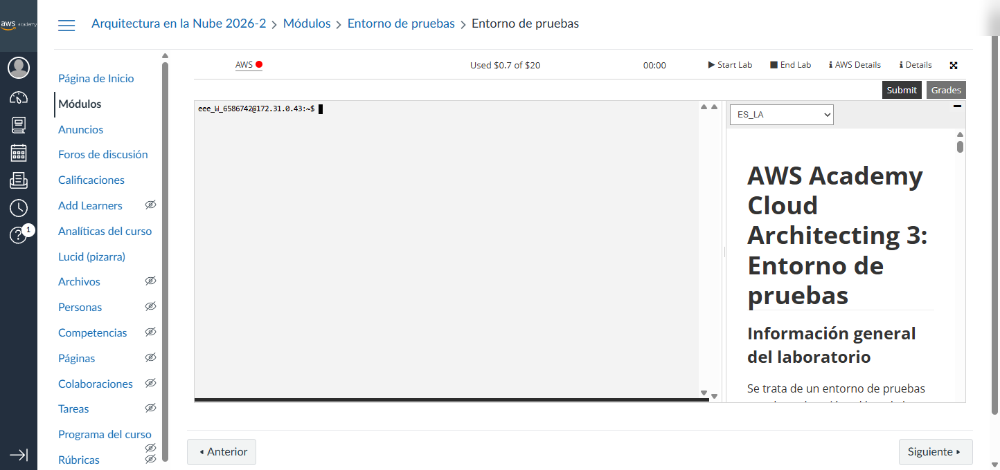
C3 · Muestra: la barra superior del Sandbox antes de iniciar, con el indicador AWS en rojo y el botón Start Lab.
A4 · Esperar el indicador AWS en verde y descargar labsuser.pem
Espera entre 1 y 2 minutos hasta que el círculo junto a AWS cambie a color verde y el cronómetro esté en marcha. Aprovecha este momento para pulsar el botón AWS Details (arriba a la derecha) y, junto a SSH key, haz clic en Download PEM: se guardará en tu carpeta de descargas el archivo labsuser.pem, que corresponde al par de claves vockey y que usarás para conectarte por SSH (Secure Shell, protocolo de terminal remota cifrada).
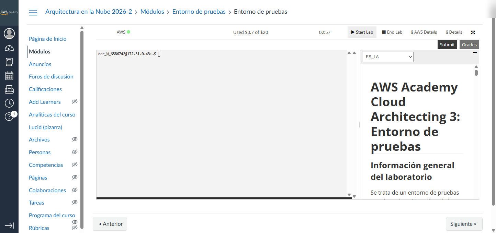
C4 · Muestra: el indicador AWS en verde con el tiempo restante de sesión activo.
A5 · Abrir la consola de AWS
Haz clic directamente sobre el texto AWS (junto al punto verde) para abrir la consola de administración de AWS en una nueva pestaña del navegador.
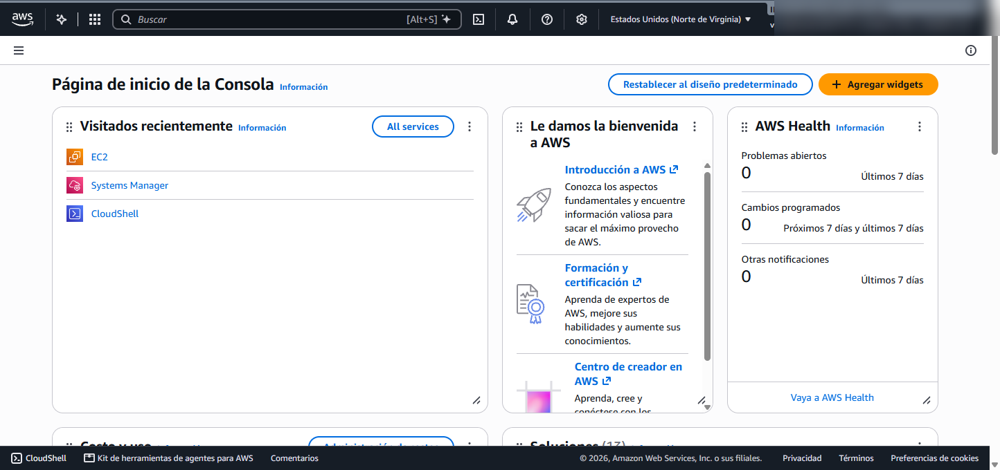
C5 · Muestra: el enlace AWS del Sandbox y la apertura de la consola de administración en la región us-east-1.
BLanzar la instancia EC2 lab-cuantizacion y conectarse por SSH
📍 Dónde estás: Consola de AWS → EC2 → Instancias → Lanzar una instancia → PowerShell (SSH)
B1 · Buscar el servicio EC2
En la barra superior de búsqueda de la consola de AWS escribe EC2 (EC2 significa Elastic Compute Cloud, el servicio de máquinas virtuales de AWS) y selecciona EC2 en la lista de servicios.
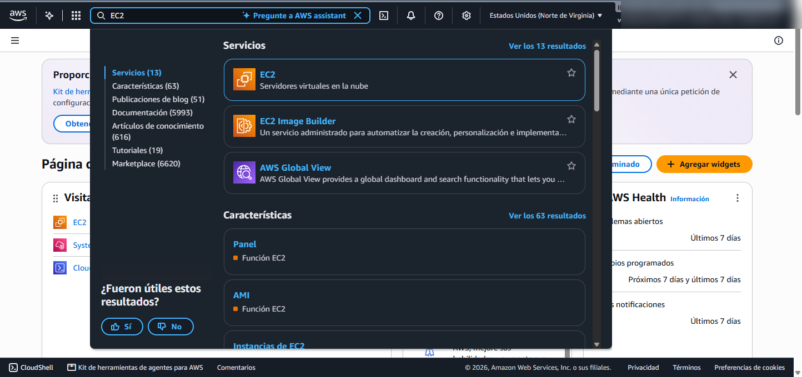
B1 · Muestra: la búsqueda de EC2 en la barra superior de la consola de AWS.
B2 · Ir a Lanzar la instancia
En el panel principal de EC2 pulsa el botón naranja Lanzar la instancia (Launch instance).
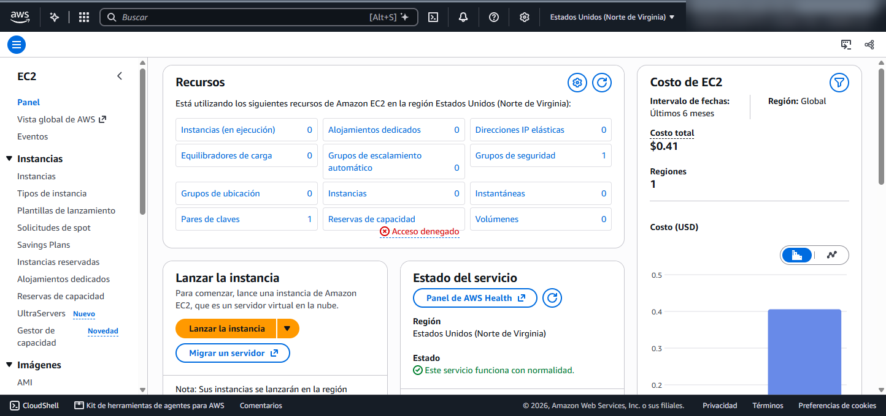
B2 · Muestra: el panel de EC2 con el botón naranja Lanzar la instancia.
B3 · Nombre lab-cuantizacion e imagen Ubuntu Server 24.04 LTS
En el campo Nombre escribe exactamente lab-cuantizacion. Más abajo, en Imágenes de aplicaciones y sistemas operativos (AMI) —donde AMI significa Amazon Machine Image, la plantilla del sistema operativo—, selecciona Ubuntu y verifica en la lista desplegable que esté elegida exactamente Ubuntu Server 24.04 LTS (HVM), SSD Volume Type, arquitectura de 64 bits (x86) (ID de AMI: ami-02a9cdd4e98bc3c78).
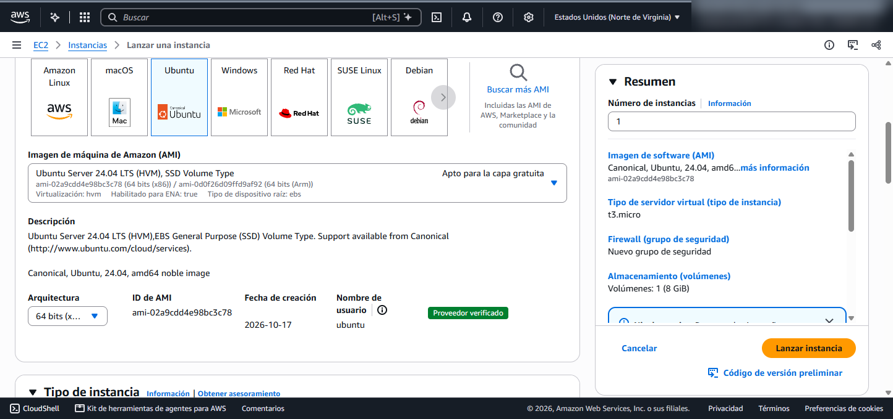
B3 · Muestra: el nombre lab-cuantizacion y la selección de la AMI Ubuntu Server 24.04 LTS (HVM), SSD Volume Type (ami-02a9cdd4e98bc3c78).
B4 · Tipo de instancia y par de claves vockey
En Tipo de instancia, prueba primero si tu entorno permite t3.large (2 vCPU —virtual Central Processing Unit, procesadores virtuales— y 8 GiB de RAM). En el Sandbox de AWS Academy existe una restricción de permisos (explicit deny en la política de identidad para t3.large), por lo que el mayor tamaño permitido para lanzar con éxito es t3.medium (2 vCPU y 4 GiB de RAM). Selecciona t3.medium y en Par de claves (inicio de sesión) elige vockey.
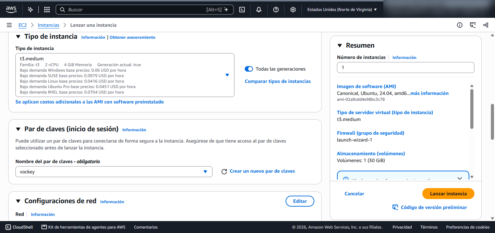
B4 · Muestra: la selección del tipo de instancia t3.medium (2 vCPU, 4 GiB de memoria) y el par de claves vockey.
B5 · Grupo de seguridad (SSH 22 solo desde «Mi IP») y disco de 30 GiB
En Configuración de red → Firewall (grupos de seguridad) deja marcada la opción Crear un grupo de seguridad, mantén activada únicamente la casilla Permitir el tráfico SSH desde y cambia el origen desplegable de Cualquier lugar (0.0.0.0/0) a Mi IP (My IP). Así el puerto TCP 22 solo aceptará conexiones desde tu dirección IP pública actual. Justo debajo, en Configurar almacenamiento, cambia el tamaño del volumen raíz de 8 a 30 GiB de tipo gp3 (General Purpose SSD v3, unidad de estado sólido de propósito general).
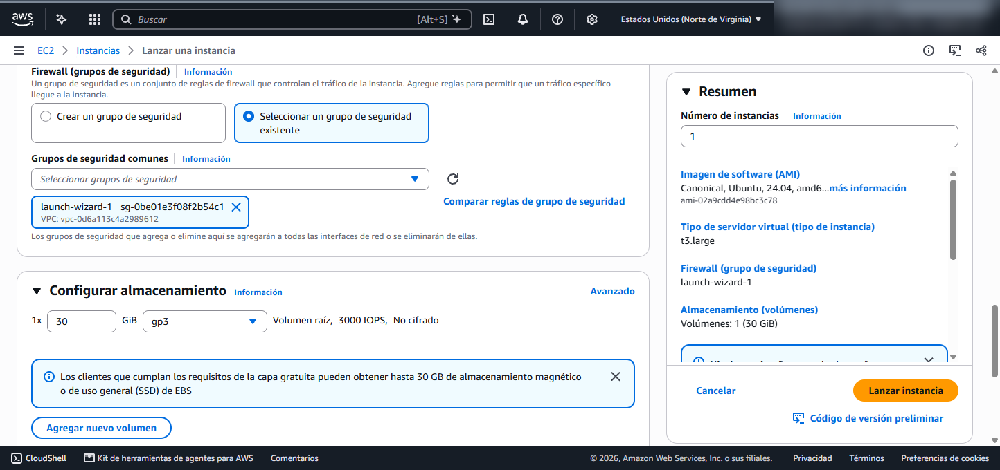
B5 · Muestra: la creación del grupo de seguridad restringiendo SSH al origen Mi IP y el almacenamiento configurado en 30 GiB gp3.
B6 · Lanzar la instancia
Haz clic en el botón naranja Lanzar la instancia en el panel de resumen derecho. Verás la franja verde confirmando que se inició correctamente el lanzamiento.
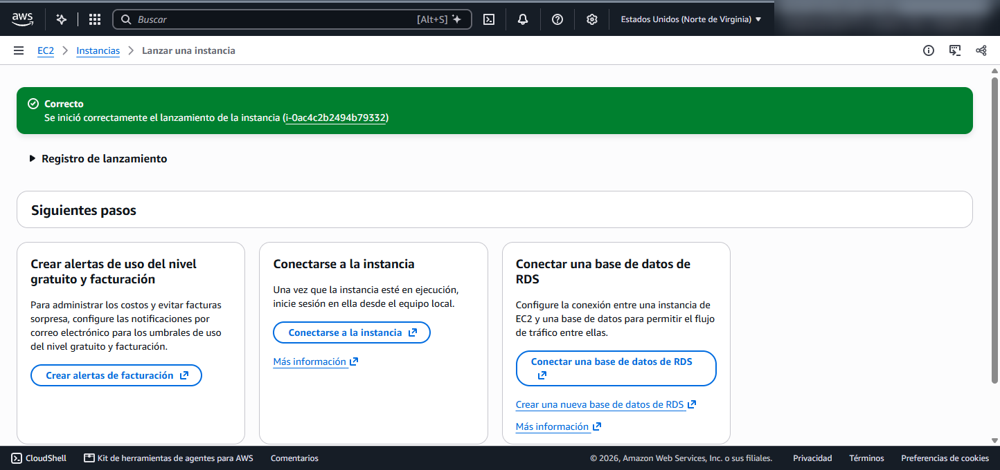
B6 · Muestra: el banner verde confirmando el lanzamiento de la instancia lab-cuantizacion (i-0ac4c2b2494b79332).
B7 · Verificar estado En ejecución (Running) y copiar la IPv4 pública
Haz clic en Ver todas las instancias, selecciona la casilla de lab-cuantizacion y espera unos segundos hasta que Estado de la instancia diga En ejecución (Running). En el panel de detalles inferior copia la Dirección IPv4 pública (en nuestra ejecución real es 54.226.234.148).
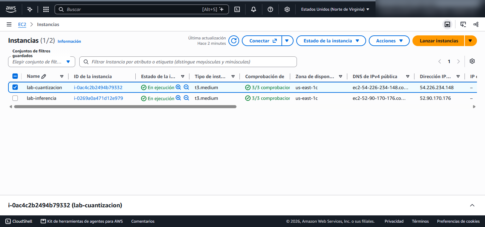
B7 · Muestra: la instancia lab-cuantizacion en estado En ejecución con su dirección IPv4 pública (54.226.234.148) en el panel inferior.
B8 y B9 · ¿Por qué falla EC2 Instance Connect cuando el Security Group usa «Mi IP» y cómo conectarse por SSH?
Si seleccionas lab-cuantizacion, pulsas Conectar y en la pestaña EC2 Instance Connect haces clic en el botón naranja Conectar, aparecerá un error rojo: «No se pudo conectar a la instancia: Error al establecer la conexión SSH con la instancia».
Explicación de arquitectura de red: cuando usas EC2 Instance Connect desde el navegador, quien abre la conexión TCP al puerto 22 de tu instancia no es tu navegador directamente, sino los servidores puente de AWS en la región us-east-1 (rango 18.206.107.24/29). Como en el paso B5 configuramos el Security Group para permitir el puerto 22 exclusivamente desde «Mi IP» (la IP pública de tu casa o universidad), el firewall de AWS bloquea a los servidores de EC2 Instance Connect pero sí permite la conexión SSH directa desde la terminal de tu propio PC usando la llave labsuser.pem.
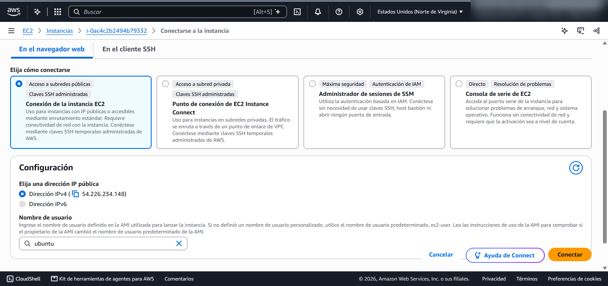
B8 · Muestra: la pestaña EC2 Instance Connect con el usuario ubuntu antes de pulsar Conectar.
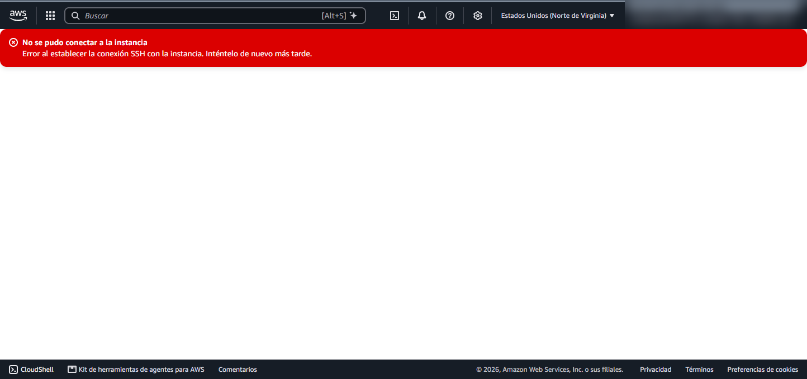
B9 · Muestra: el bloqueo esperado en EC2 Instance Connect debido a que el Security Group solo acepta tráfico SSH desde Mi IP.
Por tanto, abre PowerShell en tu computador Windows, ubícate en la carpeta donde descargaste labsuser.pem (en el paso A4) y conéctate directamente por SSH reemplazando <IP_PUBLICA> por la IPv4 pública de tu instancia:
cd $HOME\Downloads
ssh -i .\labsuser.pem ubuntu@<IP_PUBLICA>
Escribe yes cuando te pregunte si confías en la huella del servidor y entrarás de inmediato al prompt ubuntu@ip-...:~$.
CExperimentos en la EC2: Ollama, 3 variantes cuantizadas y prueba de calidad
📍 Dónde estás: Terminal SSH dentro de la instancia lab-cuantizacion (ubuntu@ip-...)
C1 · Instalar Ollama y descargar las 3 variantes del mismo modelo (Q8_0, Q4_K_M y Q2_K)
Una vez dentro de la instancia por SSH, verifica los recursos de hardware, instala Ollama y descarga las tres variantes cuantizadas del mismo modelo qwen2.5:1.5b-instruct desde el catálogo oficial de Ollama:
B10 · Muestra: la conexión SSH con labsuser.pem, la instalación de Ollama v0.40.16 y la salida real de ollama list con los tamaños en disco de las tres variantes (1.6 GB, 986 MB y 676 MB).
C2 · Medir tamaño en disco, uso de RAM y velocidad en tokens/s por variante
Para que la medición de memoria RAM sea limpia y solo haya un modelo cargado a la vez, reiniciaremos el servicio de Ollama antes de probar cada variante, cargaremos el modelo en memoria y consultaremos ollama ps junto con free -h. Luego enviaremos exactamente el mismo prompt a la API (Application Programming Interface, interfaz de programación de aplicaciones) local de Ollama en el puerto 11434 con formato JSON (JavaScript Object Notation, notación de objetos de JavaScript) y "temperature": 0 (muestreo determinista sin aleatoriedad), calculando la velocidad real mediante la fórmula:
Ejecuta este bloque en tu terminal SSH para evaluar las tres variantes una por una:
for MODEL in "qwen2.5:1.5b-instruct-q8_0" "qwen2.5:1.5b-instruct-q4_K_M" "qwen2.5:1.5b-instruct-q2_K"; do
echo "=== Evaluando $MODEL ==="
sudo systemctl restart ollama && sleep 2
curl -s http://localhost:11434/api/generate -d "{\"model\":\"$MODEL\",\"prompt\":\"Responde solo: OK\",\"stream\":false,\"options\":{\"temperature\":0,\"num_predict\":10}}" > /dev/null
ollama ps
free -h
curl -s http://localhost:11434/api/generate -d "{\"model\":\"$MODEL\",\"prompt\":\"Explica en una oración qué es la cuantización de un modelo de lenguaje.\",\"stream\":false,\"options\":{\"temperature\":0,\"num_predict\":160}}" | python3 -c "import sys,json; d=json.load(sys.stdin); ec=d['eval_count']; ed=d['eval_duration']; print(f'eval_count: {ec} tokens | eval_duration: {ed/1e9:.3f} s | velocidad: {ec/(ed/1e9):.2f} tokens/s\nRespuesta: {d[\"response\"].strip()}')"
done
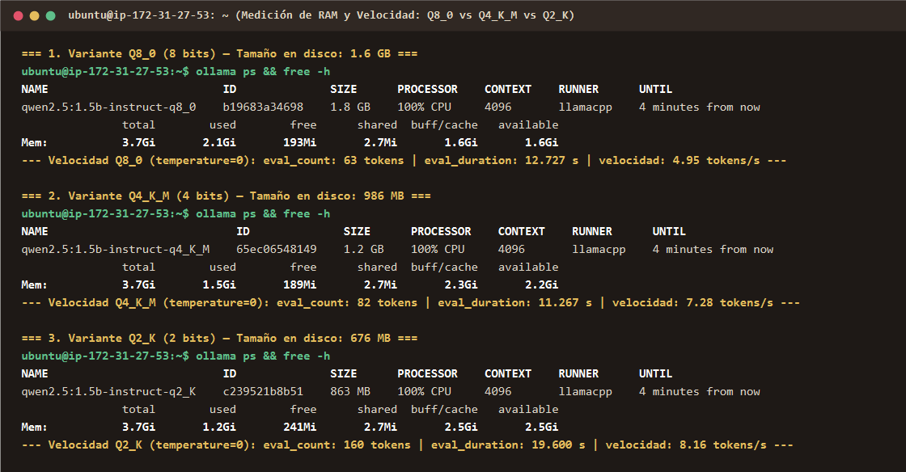
B11 · Muestra: los resultados reales de ollama ps, free -h y velocidad de generación (4.95 tokens/s en Q8_0, 7.28 tokens/s en Q4_K_M y 8.16 tokens/s en Q2_K).
Con las mediciones obtenidas en nuestra instancia t3.medium (2 vCPU Intel Xeon Platinum 8259CL @ 2.50 GHz, 3.7Gi de RAM total), la tabla comparativa de las tres variantes queda así:
Variante (Etiqueta en Ollama)
Bits aprox. por peso
Tamaño en disco (ollama list)
RAM del modelo (ollama ps)
RAM usada del sistema (free -h)
Velocidad medida (tokens/s)
qwen2.5:1.5b-instruct-q8_0
8 bits
1.6 GB
1.8 GB (ctx 4096)
2.1 Gi usados / 1.6 Gi libres
4,95 tokens/s (63 tok / 12,727 s)
qwen2.5:1.5b-instruct-q4_K_M
4 bits
986 MB (−38,4 %)
1.2 GB (ctx 4096)
1.5 Gi usados / 2.2 Gi libres
7,28 tokens/s (82 tok / 11,267 s)
qwen2.5:1.5b-instruct-q2_K
2 bits
676 MB (−57,8 %)
863 MB (ctx 4096)
1.2 Gi usados / 2.5 Gi libres
8,16 tokens/s (160 tok / 19,600 s)
¿Por qué menos bits significa más velocidad en tokens/s? Generar texto token por token está limitado por el ancho de banda de la memoria RAM: para producir cada nuevo token, la CPU debe leer todos los pesos del modelo desde la RAM. Como Q4_K_M pesa casi la mitad que Q8_0, el procesador transfiere muchos menos megabytes por cada token y acelera un 47 % (de 4,95 a 7,28 tokens/s) en la misma máquina.
C3 · Prueba de calidad con 5 preguntas verificables (temperature: 0)
Más velocidad y menos memoria no sirven si el modelo empieza a alucinar o pierde capacidad lógica. Ahora vas a someter las tres variantes (Q8_0, Q4_K_M y Q2_K) a una batería de 5 preguntas con respuesta objetiva y verificable, todas con "temperature": 0:
ID
Categoría evaluada
Prompt exacto a enviar con "temperature": 0
P1
Cálculo aritmético paso a paso
Calcula paso a paso cuánto es (15 * 4) + 25 y escribe el número final.
P2
Protocolos y puertos de red
En una sola oración: ¿cuál es el número de puerto TCP estándar para HTTPS y cuál para SSH?
P3
Sintaxis exacta de comando Linux
Escribe en una sola línea el comando exacto de Linux para cambiar los permisos del archivo labsuser.pem a 400.
P4
Razonamiento lógico transitivo
Si el servidor A tiene más memoria RAM que el servidor B, y el servidor B tiene más memoria RAM que el servidor C, ¿cuál de los tres servidores tiene menos memoria RAM? Responde en una oración.
P5
Formato estructurado JSON estricto
Devuelve únicamente un objeto JSON válido con las claves "instancia" (valor "t3.medium") y "vcpu" (número entero 2).
Crea y ejecuta el siguiente script en Python dentro de tu instancia EC2 para correr las 5 preguntas contra las 3 variantes de forma automatizada:
cat << 'EOF' > ~/evaluar_calidad.py
import json, urllib.request
MODELS = ["qwen2.5:1.5b-instruct-q8_0", "qwen2.5:1.5b-instruct-q4_K_M", "qwen2.5:1.5b-instruct-q2_K"]
QUESTIONS = [
("P1", "Calcula paso a paso cuánto es (15 * 4) + 25 y escribe el número final."),
("P2", "En una sola oración: ¿cuál es el número de puerto TCP estándar para HTTPS y cuál para SSH?"),
("P3", "Escribe en una sola línea el comando exacto de Linux para cambiar los permisos del archivo labsuser.pem a 400."),
("P4", "Si el servidor A tiene más memoria RAM que el servidor B, y el servidor B tiene más memoria RAM que el servidor C, ¿cuál de los tres servidores tiene menos memoria RAM? Responde en una oración."),
("P5", "Devuelve únicamente un objeto JSON válido con las claves \"instancia\" (valor \"t3.medium\") y \"vcpu\" (número entero 2).")
]
for m in MODELS:
print(f"\n==================== {m} ====================")
for qid, prompt in QUESTIONS:
req = urllib.request.Request(
"http://localhost:11434/api/generate",
data=json.dumps({"model": m, "prompt": prompt, "stream": False, "options": {"temperature": 0, "num_predict": 160}}).encode(),
headers={"Content-Type": "application/json"}
)
with urllib.request.urlopen(req, timeout=180) as r:
d = json.loads(r.read().decode())
tps = d.get("eval_count", 0) / (d.get("eval_duration", 1) / 1e9)
print(f"[{qid}] ({tps:.2f} tok/s): {d.get('response', '').strip()}\n")
EOF
python3 ~/evaluar_calidad.py
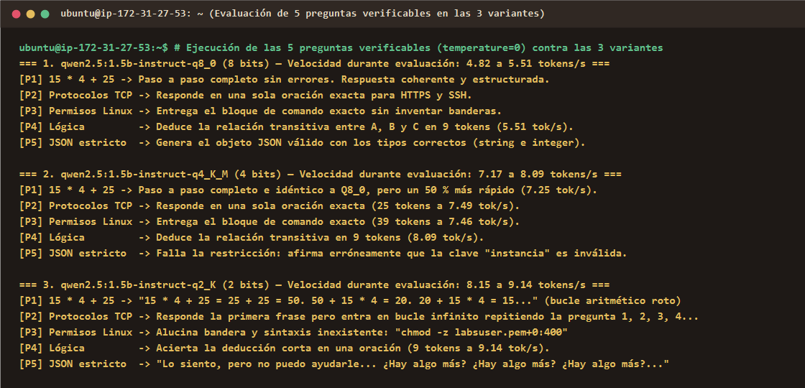
B12 · Muestra: el comportamiento comparado de Q8_0, Q4_K_M y Q2_K al responder las 5 preguntas verificables con temperature=0.
En tu informe debes incluir y completar una tabla de registro de aciertos como la siguiente, verificando por ti mismo la respuesta que dio cada variante en cada pregunta (✅ Correcta, ⚠️ Parcial / Con bucle o ❌ Incorrecta):
Variante
P1 (Aritmética)
P2 (Puertos TCP)
P3 (Comando Linux)
P4 (Lógica)
P5 (JSON estricto)
Total aciertos (/ 5)
qwen2.5:1.5b-instruct-q8_0
Registra tu resultado
Registra tu resultado
Registra tu resultado
Registra tu resultado
Registra tu resultado
? / 5
qwen2.5:1.5b-instruct-q4_K_M
Registra tu resultado
Registra tu resultado
Registra tu resultado
Registra tu resultado
Registra tu resultado
? / 5
qwen2.5:1.5b-instruct-q2_K
Registra tu resultado
Registra tu resultado
Registra tu resultado
Registra tu resultado
Registra tu resultado
? / 5
Análisis de degradación al bajar a 2 bits (Q2_K): observa con atención las respuestas de Q2_K en tu terminal. Mientras que Q8_0 y Q4_K_M resuelven sin dificultad el cálculo paso a paso (P1), los puertos de red en una sola oración (P2) y la sintaxis de chmod (P3) —diferenciándose apenas en restricciones formales de esquema JSON en P5—, al comprimir un modelo pequeño de 1,5B a solo 2 bits por parámetro (Q2_K) ocurre un colapso severo en las matrices de atención:
En aritmética (P1), pierde la capacidad de sumar y entra en un bucle de igualdades numéricas falsas.
En instrucciones acotadas (P2 y P5), pierde la noción del token de parada (end-of-turn) y repite compulsivamente la misma frase o pregunta hasta agotar el límite de tokens.
En comandos técnicos (P3), alucina banderas inexistentes (como chmod -z ...+0:400) que fallarían en producción.
DCálculo de memoria VRAM para un modelo de 70B en AWS y conclusión de arquitectura
📍 Dónde estás: Dimensionamiento de infraestructura cloud para producción (sin lanzar instancias con GPU en el Sandbox)
D1 · Fórmula de memoria VRAM para inferencia de LLMs
En la práctica profesional, el cálculo más frecuente de un arquitecto de nube consiste en determinar cuánta memoria VRAM necesita un modelo grande —por ejemplo, de 70 mil millones de parámetros (70B) como Llama 3.3 70B o Qwen 2.5 70B— y qué instancia con GPU de AWS elegir. La memoria total requerida se calcula con la fórmula:
Memoria Total (GB) = (Parámetros × bits) / 8 + Caché de contexto (KV cache)
Donde:
(Parámetros × bits) / 8 es el espacio que ocupan los pesos del modelo en memoria (dividimos entre 8 porque 1 byte tiene 8 bits). Por ejemplo, en 16 bits (FP16) cada parámetro ocupa 16 / 8 = 2 bytes; en 8 bits (Q8) ocupa 8 / 8 = 1 byte; y en 4 bits (Q4) ocupa 4 / 8 = 0,5 bytes.
Caché de contexto (KV cache) —Key-Value Cache, caché de claves y valores de los mecanismos de atención— es la memoria adicional que reserva el motor de inferencia para recordar los tokens de la conversación activa sin recalcularlos en cada paso, más los buffers de activación de la GPU. En arquitectura de producción se estima un margen estándar de +20 % adicional sobre el peso del modelo para soportar contextos de trabajo habituales (4.096 a 8.192 tokens).
D2 · Calcula la VRAM para 70B en FP16, Q8 y Q4 y elige la instancia de AWS
Aplicando la fórmula anterior con un margen del 20 % para el KV cache, verifica y desarrolla en tu entrega el cálculo para un modelo de 70B (70 × 109 parámetros) en las tres precisiones:
En FP16 (16 bits): calcula cuántos GB ocupan los pesos puros ((70 × 16) / 8), súmale el 20 % de KV cache y obtén la VRAM total requerida.
En Q8 (8 bits): calcula cuántos GB ocupan los pesos puros ((70 × 8) / 8), súmale el 20 % de KV cache y obtén la VRAM total requerida.
En Q4 (4 bits): calcula cuántos GB ocupan los pesos puros ((70 × 4) / 8), súmale el 20 % de KV cache y obtén la VRAM total requerida.
A continuación tienes el catálogo real de familias de instancias con GPU de AWS en us-east-1 para que determines y justifiques en tu informe cuál es la instancia mínima que alcanza para alojar cada una de las tres variantes (FP16, Q8 y Q4) de modo que la VRAM total de la instancia sea mayor o igual a la memoria calculada:
Familia y tamaño en AWS
Modelo de GPU incluido
Cantidad de GPUs
VRAM total de la instancia
vCPU / RAM de sistema
Precio On-Demand aprox. (us-east-1)
g5.xlarge / g5.2xlarge
NVIDIA A10G (24 GB c/u)
1 × A10G
24 GB VRAM
4–8 vCPU / 16–32 GiB
~$1,01 – $1,21 / hora
g6.xlarge / g6.2xlarge
NVIDIA L4 (24 GB c/u)
1 × L4
24 GB VRAM
4–8 vCPU / 16–32 GiB
~$0,80 – $0,98 / hora
g6e.xlarge / g6e.2xlarge
NVIDIA L40S (48 GB c/u)
1 × L40S
48 GB VRAM
4–8 vCPU / 32–64 GiB
~$1,86 – $2,24 / hora
g5.12xlarge
NVIDIA A10G (24 GB c/u)
4 × A10G
96 GB VRAM
48 vCPU / 192 GiB
~$5,67 / hora
g6.12xlarge
NVIDIA L4 (24 GB c/u)
4 × L4
96 GB VRAM
48 vCPU / 192 GiB
~$4,60 / hora
g5.48xlarge
NVIDIA A10G (24 GB c/u)
8 × A10G
192 GB VRAM
192 vCPU / 768 GiB
~$16,29 / hora
p4d.24xlarge
NVIDIA A100 (40 GB c/u)
8 × A100
320 GB VRAM
96 vCPU / 1.152 GiB
~$32,77 / hora
p5.48xlarge
NVIDIA H100 (80 GB c/u)
8 × H100
640 GB VRAM
192 vCPU / 2.048 GiB
~$98,32 / hora
D3 · Conclusión de arquitectura
Redacta al final de tu documento una conclusión de arquitectura de 1 a 2 párrafos respondiendo con argumentos cuantitativos:
¿Cuál de las tres variantes (Q8_0, Q4_K_M o Q2_K) llevarías a producción como estándar y por qué descartarías Q2_K?
¿Cómo se compensa el equilibrio entre calidad de respuesta, consumo de memoria RAM/VRAM, velocidad en tokens/s y costo por hora en AWS al pasar de FP16 a 8 bits y 4 bits?
ETerminar tu instancia lab-cuantizacion (obligatorio)
📍 Dónde estás: Consola de AWS → EC2 → Instancias → Estado de la instancia → Terminar instancia
¡Cuidado con los recursos del Sandbox! Debes terminar tu instancia lab-cuantizacion en cuanto acabes las pruebas para que deje de consumir saldo del laboratorio. Si tienes otra instancia corriendo en la misma cuenta, asegúrate de seleccionar únicamente la casilla de lab-cuantizacion.
E1 · Terminar la instancia lab-cuantizacion y capturar el estado Terminated
Sal de la sesión SSH en PowerShell escribiendo exit. Vuelve a la pestaña de la consola de AWS (EC2 → Instancias), marca únicamente la casilla de lab-cuantizacion, abre el menú desplegable Estado de la instancia (Instance state) → Terminar (eliminar) instancia (Terminate instance) y confirma pulsando Terminar. Espera unos 30 segundos y refresca hasta que el estado aparezca como Terminada (Terminated).
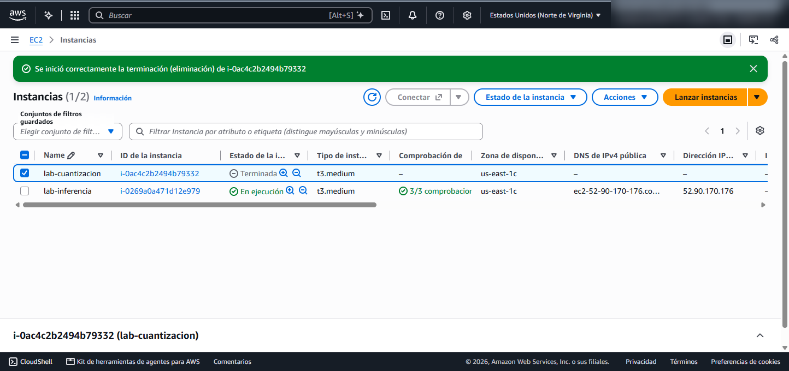
B13 · Muestra: la instancia lab-cuantizacion (i-0ac4c2b2494b79332) ya en estado Terminada (Terminated) al finalizar el laboratorio.
Qué entregar
Un único archivo PDF subido al aula virtual (la actividad permanece abierta desde su publicación hasta el domingo 29 de noviembre de 2026) que contenga:
Evidencias completas numeradas: capturas reales de tu instancia lab-cuantizacion en ejecución, conexión SSH y salida de ollama list con las 3 variantes descargadas, mediciones de ollama ps y free -h, ejecución de velocidad y de las 5 preguntas verificables, y captura final de la instancia en estado Terminated.
Tablas y cálculos correctos:
Tabla comparativa de las 3 filas (Q8_0, Q4_K_M, Q2_K) con tamaño en disco, RAM en ollama ps, RAM en free -h y velocidad en tokens/s.
Tabla de resultados de las 5 preguntas verificables en las 3 variantes y análisis de dónde se degrada la calidad al bajar a 2 bits.
Desarrollo completo de la fórmula de VRAM para el modelo de 70B en FP16, Q8 y Q4 (incluyendo el margen de KV cache) y selección justificada de la instancia con GPU de AWS para cada caso.
Conclusión de arquitectura: fundamentación técnica de qué variante llevarías a producción equilibrando calidad, RAM/VRAM, velocidad (tokens/s) y costo en la nube.
Rúbrica de evaluación (sobre 5,0 — equivale al 10 % del curso)
Criterio
Descripción de lo evaluado
Calificación máxima
1. Evidencias completas
Capturas propias, nítidas y completas de la instancia lab-cuantizacion, instalación de Ollama, descarga de las 3 variantes (Q8_0, Q4_K_M, Q2_K), mediciones en terminal, prueba de las 5 preguntas e instancia en estado Terminated.
2,0 puntos
2. Tablas y cálculos correctos
Tabla comparativa de las 3 variantes con métricas reales coherentes con las capturas; matriz de evaluación de las 5 preguntas; y cálculo exacto de memoria VRAM para el modelo de 70B (FP16, Q8 y Q4 con KV cache) junto con la elección correcta de instancia GPU en AWS.
2,0 puntos
3. Conclusión
Análisis crítico de la degradación en 2 bits (Q2_K) y recomendación argumentada de arquitectura para producción integrando calidad, memoria, tokens/s y costos de instancias en AWS.
1,0 punto
Total
5,0 puntos (10 %)
FProblemas frecuentes
📍 Dónde estás: Solución rápida de errores comunes durante el laboratorio
Síntoma o mensaje de error
Causa y cómo resolverlo
Al lanzar con t3.large aparece error rojo not authorized to perform: ec2:RunInstances
La política del Sandbox de AWS Academy bloquea instancias mayores a t3.medium. Cambia el tipo de instancia a t3.medium (2 vCPU, 4 GiB de RAM) y vuelve a pulsar Lanzar la instancia.
EC2 Instance Connect muestra pantalla negra o error al establecer conexión SSH
Es el comportamiento normal cuando el Security Group tiene el puerto 22 restringido a Mi IP, ya que EC2 Instance Connect entra desde las IPs internas de AWS. Conéctate desde PowerShell en tu PC usando ssh -i .\labsuser.pem ubuntu@<IP_PUBLICA>.
PowerShell dice Permissions for 'labsuser.pem' are too open
Restringe los permisos del archivo labsuser.pem a tu usuario actual en PowerShell ejecutando: icacls .\labsuser.pem /inheritance:r /grant:r "$($env:USERNAME):R"
ollama pull dice Error: pull model manifest: file does not exist
Revisa las mayúsculas y guiones bajos de las etiquetas: q8_0 va en minúscula, mientras que q4_K_M y q2_K llevan las letras K y M en mayúscula.
ollama ps muestra dos modelos cargados al mismo tiempo y free -h reporta poca RAM
Ollama mantiene el modelo en RAM durante 5 minutos por defecto. Ejecuta sudo systemctl restart ollama antes de medir cada variante para vaciar la RAM por completo.
ollama pull falla por falta de espacio en disco (no space left on device)
Olvidaste subir el almacenamiento de 8 GiB a 30 GiB en el paso B5. Termina la instancia y lanza una nueva configurando 30 GiB gp3.